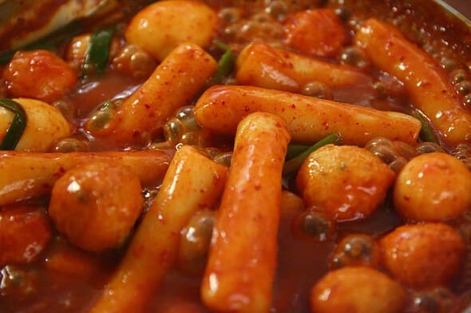

Tteokbokki (Hot and Spicy Rice Cakes)
Home

Recipe by Maangchi
Hot and spicy rice cakes
Recipe type: rice cake, snack, spicy, street food
Ingredients: Dried anchovies, dried kelp, eggs, fish cakes, garaetteok, gochugaru, gochujang, green onion, sugar, and water
Ingredients
- 1 pound of cylinder shaped rice cake (tteok), fresh or frozen, bought or homemade. (Use a little more if you’re not adding hard boiled eggs and fish cakes)
- 4 cups of water
- 7 large size dried anchovies, with heads and intestines removed
- 6 x 8 inch dried kelp
- ⅓ cup hot pepper paste (gochujang)
- 1 tablespoon Korean hot pepper flakes (gochugaru) aka “Korean chili flakes”
- 1 tablespoon sugar
- 3 green onions (scallions), cut into 3 inch long pieces
- 2 hard boiled eggs, shelled (optional)
- ½ pound fish cakes (optional)
Directions:
- Add the water, dried anchovies, and dried kelp to a shallow pot or pan.
- Boil for 15 minutes over medium high heat without the lid.anchovy stockanchovy stock
- Combine gochujang (hot pepper paste), gochugaru (hot pepper flakes), and sugar in a small bowl.
- Remove the anchovies and kelp from the pot and add the rice cake, the spicy mixture in the bowl, the green onion, and the optional fish cakes and hard boiled eggs. The stock will be about 2½ cups.
- When it starts to boil, stir gently with a wooden spoon. Let it simmer and keep stirring it until the rice cake turns soft and the sauce thickens and looks shiny. It should take about 10 to 15 minutes. If the rice cake is not soft enough in that time, add more water and continue stirring until it softens. Freshly made rice cakes will soften faster so if you use frozen rice cakes, thaw them out and soak them in cold water first, to soften them up before cooking with them.
- Remove from the heat and serve hot. If you have any leftovers, keep them in the fridge and reheat them when you want to eat. They won’t be as good as when you first made them, but not bad. You should finished them in a few days, but it’s best to eat them all at once right after you make them.